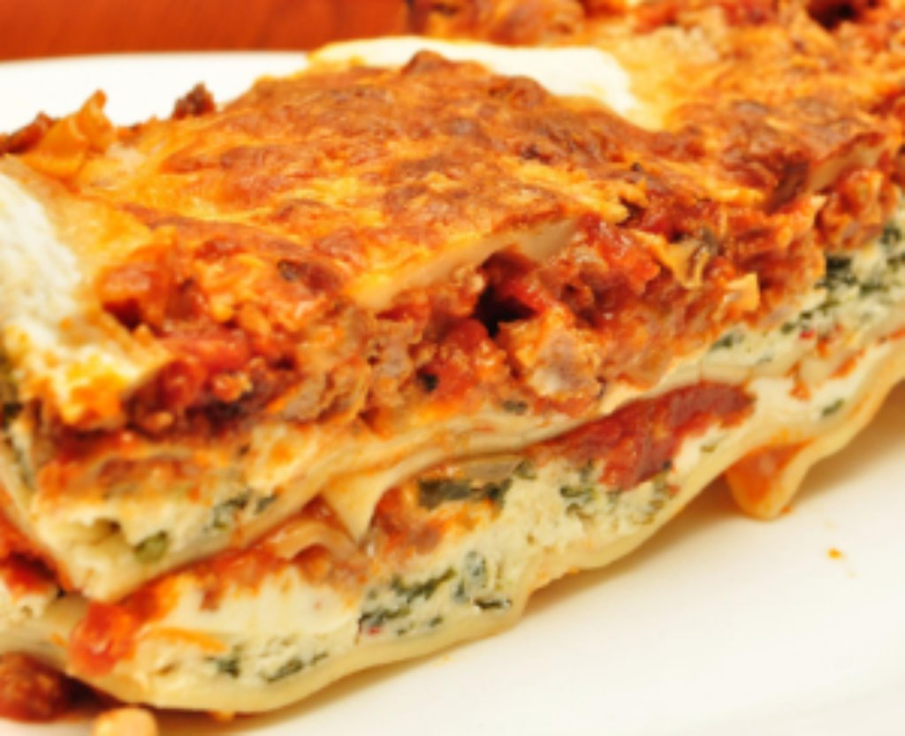

Lasagna Recipe

Lasagna is a hearty and flavorful baked pasta dish made by layering sheets of pasta with rich meat sauce, creamy cheeses, and savory seasonings.
The dish typically includes layers of pasta, a tomato-based sauce with ground beef and/or sausage, and a mixture of cheeses such as ricotta, mozzarella, and Parmesan. As it bakes, the cheese melts and blends with the sauce, creating a warm, bubbling dish with a golden, slightly crispy top. Each bite combines tender pasta, rich sauce, and creamy cheese, making lasagna a filling and comforting meal often enjoyed at family dinners or special gatherings.
- Prep Time: 45 mins
- Cook Time: 45 mins
- Total Time: 1 hr 30 mins
- Servings: 8
Note: Double the recipe to increase the serving size